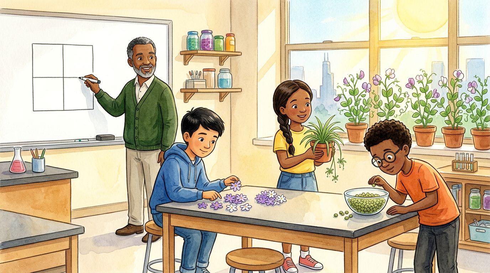

Grade 7 · Science · MS-LS3-2
The monk who counted peas
A story about Gregor Mendel's peas, the traits that hide and come back, and why some offspring are copies and others are not.
El monje que contaba guisantes. Un cuento sobre los guisantes de Gregor Mendel, los rasgos que se esconden y vuelven, y por qué algunas crías son copias y otras no.
Science words you will learn
Tap a green word to see what it means.
Toca una palabra verde para ver qué significa. Con la ayuda activada, verás también la definición en español.
The story
El cuento está en inglés. Pulsa «Listen to the story» para escucharlo y toca las palabras verdes cuando no entiendas una.
On Monday, a bowl of dried peas sat on Mr. Mensah's desk. "In 1856," he said, "a monk named Gregor Mendel began an experiment in the garden of his monastery in the city of Brno. Over about eight years, he grew nearly 30,000 pea plants, and he counted almost everything about them."
"Why peas?" asked Daniel. "Because pea plants have clear ," said Mr. Mensah. "A flower is purple or white, never something in between." Mendel moved pollen from purple flowers to white flowers. Every plant in the next generation had purple flowers. The white color seemed to have disappeared.
Then Mendel let those purple plants make seeds of their own. In the generation after that, the white flowers came back! Mendel counted 705 plants with purple flowers and 224 with white flowers. Israel did the division on his calculator. "705 divided by 224 is about 3.1," he said. "That's almost exactly three purple flowers for every white one."
"Mendel didn't know about DNA," said Mr. Mensah, "but he figured out the rule. Each plant gets two copies of the for flower color, one from each parent." "The purple form is : one copy is enough to make the flower purple. The white form is : a flower is white only when both copies are white."
He drew a square with four boxes on the board. On top he wrote the two copies from one parent, P and p, and on the side the two copies from the other parent, P and p. The kids filled in the boxes: PP, Pp, Pp and pp. "Three boxes have at least one big P," said Athena, "so three out of four are purple. The chance of a white flower is one fourth." "Mendel's 3 to 1," said Mr. Mensah, smiling.
Salma raised her hand. "My grandmother's spider plant makes baby plants on long stems. She cuts them off and plants them." "That's a different way to make offspring," said Mr. Mensah. "It's : one parent. Each baby plant gets exactly the same genes as the parent, so it's an identical copy."
"And the peas?" asked Selena. "Peas grow from seeds that form after pollen from one flower meets another," he said. "That's : two parents. Each seed gets a different mix of genes from both, so the offspring can be different from each other and from their parents." Elías looked at his class. "That's why nobody in this room looks exactly like their brother or sister."
Mr. Mensah told one last fact. Mendel published his results in 1866, but almost nobody paid attention, and he died without fame. In 1900, three scientists found his paper and saw that he had been right all along. "He was right for 34 years before anybody noticed," said Daniel. Sophia wrote in her notebook: Count carefully. The numbers will tell the truth, even if people don't listen right away.
Glossary
- trait
- A feature of a living thing, like flower color or seed shape, that can be passed from parents to offspring.
- rasgo: Una característica de un ser vivo, como el color de la flor o la forma de la semilla, que pasa de los padres a la cría.
- gene
- A tiny set of instructions inside a cell that helps decide a trait. Offspring get genes from their parents.
- gen: Un pequeño conjunto de instrucciones dentro de la célula que ayuda a decidir un rasgo. Las crías reciben genes de sus padres.
- dominant
- A form of a gene that shows its trait even when only one copy is present.
- dominante: Una forma de un gen que muestra su rasgo aunque haya una sola copia.
- recessive
- A form of a gene whose trait shows only when there are two copies of it. A dominant form can hide it.
- recesivo: Una forma de un gen cuyo rasgo solo se ve cuando hay dos copias. Una forma dominante lo puede esconder.
- sexual reproduction
- Reproduction with two parents. The offspring get a mix of genes from both, so they are not identical.
- reproducción sexual: Reproducción con dos progenitores. La cría recibe una mezcla de genes de los dos, por eso no es idéntica.
- asexual reproduction
- Reproduction with only one parent. The offspring get the same genes, so they are identical copies.
- reproducción asexual: Reproducción con un solo progenitor. La cría recibe los mismos genes, por eso es una copia idéntica.
Questions
Choose the correct answer. If you make a mistake, the story shows you where the answer is.
Elige la respuesta correcta. Si te equivocas, el cuento te muestra dónde está la respuesta.
-
Question A. What happened when Mendel crossed purple flowers with white flowers?
¿Qué pasó cuando Mendel cruzó flores moradas con flores blancas?
Every plant in the next generation had purple flowers; the white color seemed to disappear.
-
Question B. What did Mendel find in the generation after that?
¿Qué encontró Mendel en la generación siguiente?
White flowers came back: 705 purple and 224 white, about 3 purple for every white.
-
Question C. Why can one purple copy of the gene hide a white copy?
¿Por qué una copia morada del gen puede esconder una copia blanca?
Purple is dominant: one copy is enough. White is recessive: it shows only with two copies.
-
Question D. Why are the baby spider plants identical to the parent?
¿Por qué las plantitas de la cinta son idénticas a la planta madre?
In asexual reproduction there is only one parent, so each baby plant gets exactly the same genes.
-
Question E. Why can offspring from sexual reproduction be different?
¿Por qué las crías de la reproducción sexual pueden ser distintas?
Each seed gets a different mix of genes from both parents, so the offspring can be different.
Challenge: explain your thinking
Use a model
A pea plant with one purple copy and one white copy (Pp) is crossed with a white plant (pp). Draw the square with four boxes and fill it in. What fraction of the offspring will probably be purple? Explain why.
Usa un modelo. Se cruza una planta de guisante con una copia morada y una blanca (Pp) con una planta blanca (pp). Dibuja el cuadro de cuatro casillas y complétalo. ¿Qué fracción de la cría será probablemente morada? Explica por qué.
Answer in your notebook or talk it over with a classmate. Use evidence from the story.
Responde en tu cuaderno o coméntalo con un compañero. Usa evidencia del cuento.
Check your thinking
The boxes are Pp, Pp, pp and pp. Two of the four boxes have a dominant P, so about 2/4 = 1/2 of the offspring will be purple, and 1/2 will be white. The white plants are pp: they got the recessive form from both parents.